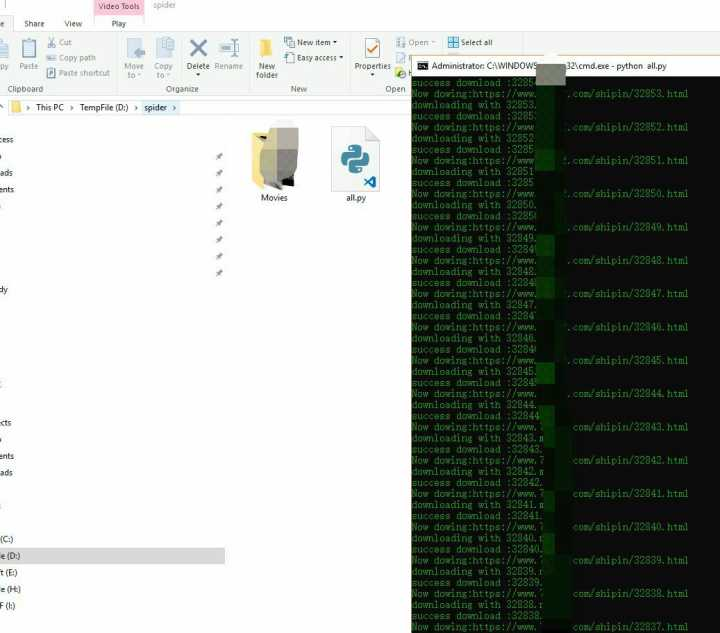
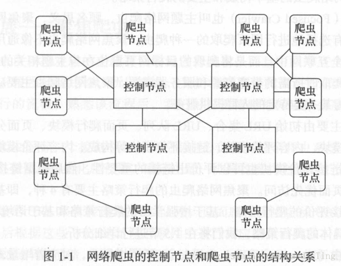
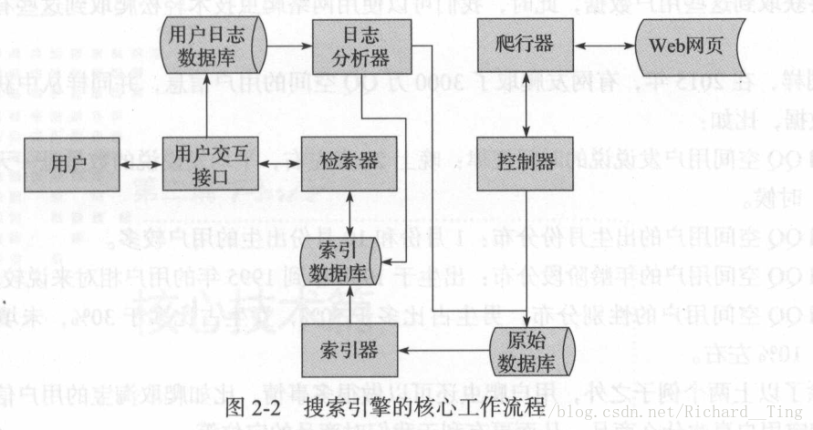
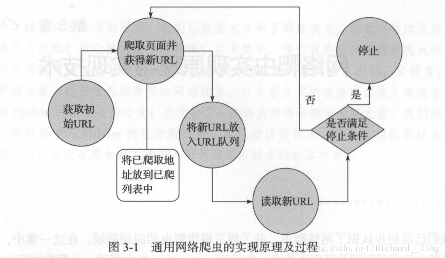
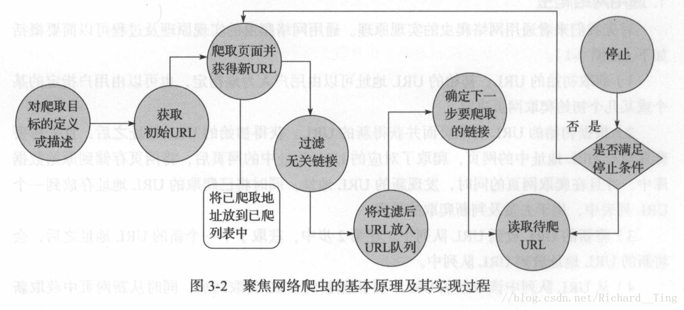
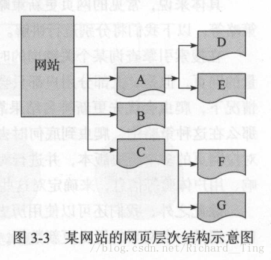

科创要用到深层网络爬虫所以系统学一次python爬虫，另外一个项目采用spring boot当后端，果然面向需求编程才是王道，这本书叫精通python网络爬虫，不求精通，好歹入个门吧(还有个原因前几天拿爬虫试了试水，确实天下武功，唯快不破，脚本的速度真的可以为所欲为)
 ### 一、爬虫介绍 #### 1.1、为何学习网络爬虫 （1）定制一个个性化的搜索引擎 搜索引擎离不开爬虫，例:百度（百度蜘蛛BaiduSpider）360(360Spider) 搜狗（SougouSpider）必应（BingBot） （2）数据分析 （3）优化搜索引擎 （4）工作生计 （5）兴趣爱好1.2、网络爬虫的组成
网络爬虫由控制节点，爬虫节点，资源库构成。

控制节点：爬虫的中央控制器，根据URL地址分配线程，调用爬虫节点具体爬行。
爬虫节点：应用相关算法，对网页进行具体爬行。
资源库：将爬虫节点爬行结果存储到对应的资源库中。
1.3、爬虫的分类
| 爬虫类型 | 具体说明 |
|---|---|
| 通用网络爬虫 | 爬行目标数据巨大，范围广 |
| 聚集网络爬虫 | 目标网页是定位与主题相关网页 |
| 增量式网络爬虫 | 只爬取内容发生变化的网页 |
| 深层网络爬虫 | 爬取深层页面 |
| 注明：在互联网中，网页按存在方式分类，分为表层页面和深层页面。 | |
| （1）表层页面，不需要提交表单，使用静态链接到达的静态页面。 | |
| （2）深层页面，需提交表单，才能获取的页面。 | |
| （3）深层网络爬虫最重要的部分是填写表单，以爬取深层页面。 |
二、搜索引擎核心
爬虫与搜索引擎密不可分。
下图所示搜索引擎的核心工作流程。

（1）搜索引擎利用爬虫模块（控制器，爬行器）从互联网爬取相应网页存储至原始数据库中。
（2）对原始数据库中数据进行索引（相当于索引器给数据起名字），并存储到索引数据库中。
（3）用户交互检索信息，检索器会从索引数据库中获取数据进行相应的检索处理。
（4）同时，用户输入信息会被存储到用户日志数据库中。
（5）用户日志数据库中的数据会交给日志分析器进行处理。
（6）日志分析器会根据大量的用户数据去调用原始数据库和索引数据库，改变排名结果或进行其他操作。
三、网络爬虫实现原理与实现技术
3.1、通用网络爬虫VS聚焦网络爬虫
- 通用网络爬虫
 - 聚焦网络爬虫

聚焦网络爬虫，是有目的的进行爬取。
必须增加目标的定义和过滤机制。
其执行原理和过程需要比通用网络爬虫多出三步，即目标的定义、过滤无关链接、下一步要爬取的 URL 地址的选取等。本质上就是增加了一个过滤机制
3.2、爬行策略

| 爬行策略 | 具体说明 |
|---|---|
| 深度优先爬行策略 | A-D-E-B-C-F-G |
| 广度优先爬行策略 | A-B-C-D-E-F-G |
| 大站优先策略 | 优先爬取大站（网页数量多的网站）中的 URL 地址 |
| 反链策略 | 优先爬取反链数量（被其他网页指向的次数）多的网站 |
| 其他爬行策略 | 如 OPIC 策略、Partial 策略、PageRank 策略等 |
| 反链策略要防止作弊现象，某些循环指向判断机制。 |
3.3、网站更新策略
| 更新策略 | 具体说明 |
|---|---|
| 用户体验策略 | 大部分用户只关注排名靠前的网页，爬虫优先更新排名结果靠前的网页 |
| 历史数据策略 | 依据网页历史更新数据，利用数学建模，预测下一次更新时间，从而确定更新周期 |
| 聚类分析策略 | 一般具有类似属性的网页更新频率类似–>对海量网页进行聚类分析，形成多个类–>对同一个类抽样，取平均值更新–>从而确定爬行频率 |
3.4、网站分析算法
| 网页分析算法 | 具体说明 |
|---|---|
| 基于用户行为 | 基于用户访问行为（如访问频率、时长等） |
| 基于网络拓扑（如PageRank，谷歌引擎核心算法） | 依靠网页间链接关系计算权重，进行排名 |
| 基于网页内容 | 依据网页数据、文本网页内容特征等 |